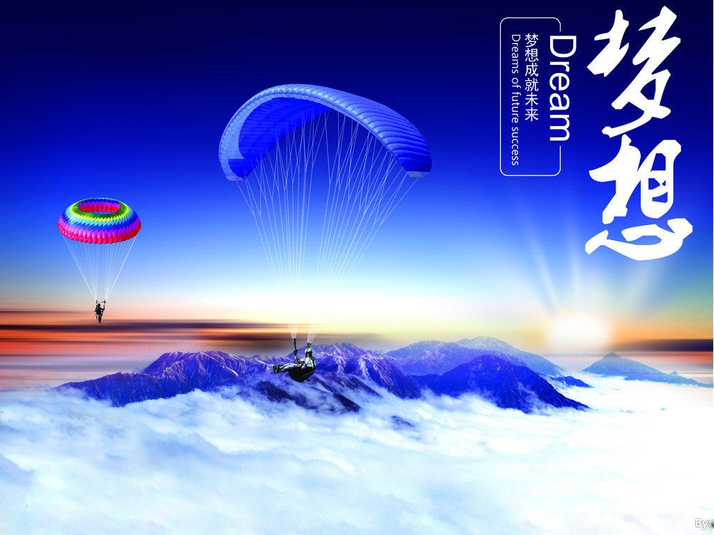

您现在的位置是：首页>关于我>慢生活
谈梦想
作者：L分类：[经典语录] 阅读（1）
我们都有自己的梦想，因为有梦而精彩，有理想而活力。
我把梦和想分开解释，梦只是无现实的，日有所思，夜有所梦。为什么说有梦而精彩了，规范很简单。有些人做了可怕的梦整天不安，有的做了好梦，充满活力。有喜也有悲，我们的人生就是要这样。有的人做了美妙的梦，他把梦中的快乐，带出来分享。好的作品，好的电影，等有的人天天做非现实的梦，那是可怕的，他不愿意活到现实的生活中，只能活在梦中逍遥。可怕的是你不愿意清醒。
我在来分析想。有梦想的人是最成功的人，这句话不假。不管做什么都离不开想，猜想，幻想都是一样。设计师就是大胆的想，设计出好的作品，作家，离不开幻想，写自己身边的生活事。把自己当主人公。写自己的英雄魅力，写自己的悲惨人生都可以。只要你大胆的去想。相信自己。
我相信自己我能设计出好的作品，我能写出好的文章，拍出精彩动人的电影。因为我有大胆的想象力，做任何事都是一样的，根据你自己想要的结果去努力，去奋斗。
但梦和想都有共同点就是可以让有些人奋发，成为有地位的人，但有些人不是的，因为他每天做的梦不愿意清醒。有些人有过大胆的想象力，他是非现实，在那里盲目的想，没有终点。
朋友们只要你向着你的终点奋发，你的人生定会精彩。因为你大胆的想过，你i的梦会你而精彩。将你的梦想带给大家，分享出来。
大胆去想吧看到你美妙的作品，精彩的文章，动人的电影，骄傲的成绩。加油!!!
梦想还是要有的，万一实现了呢！（马云）
